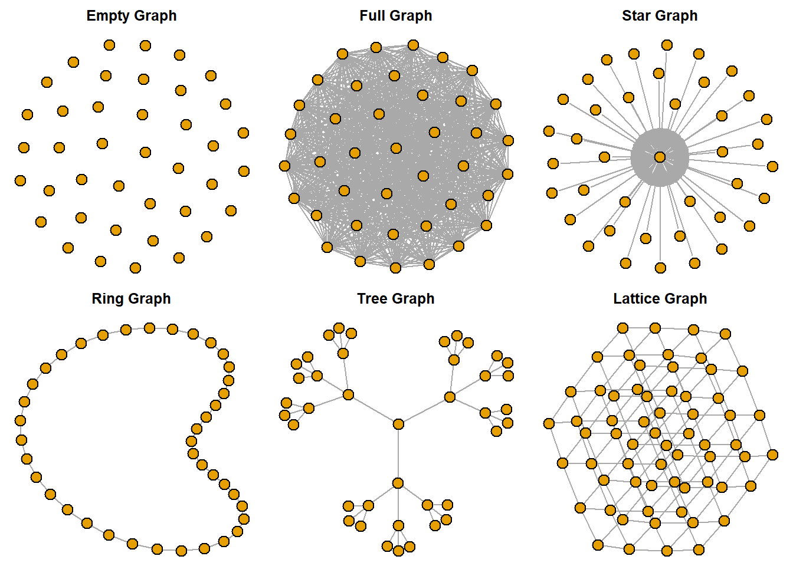
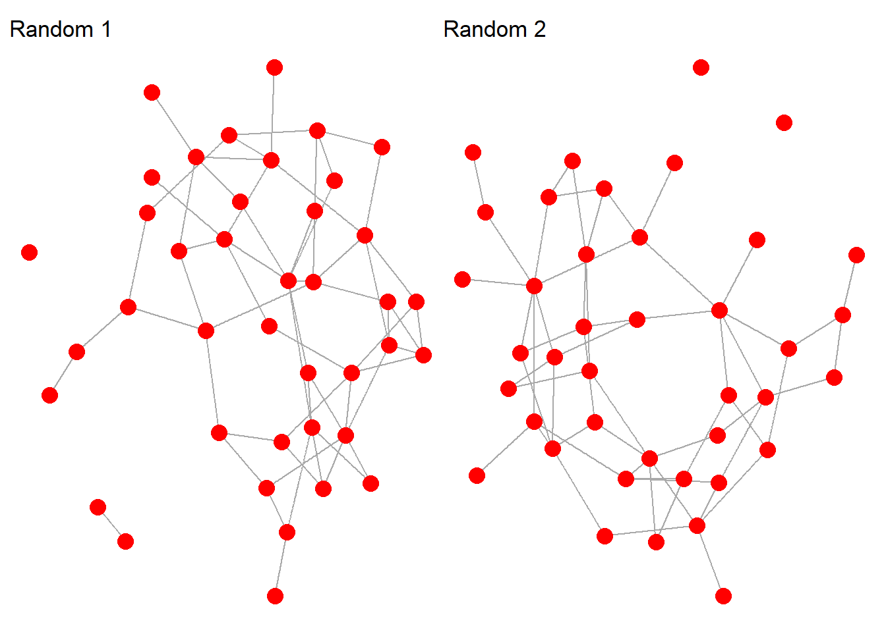
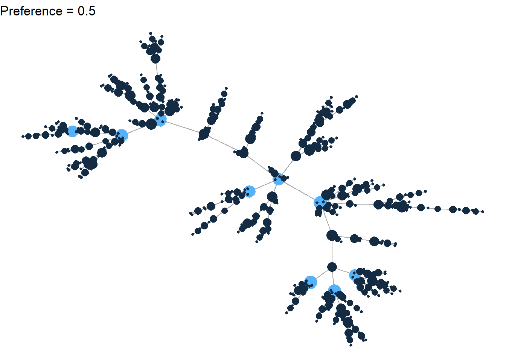
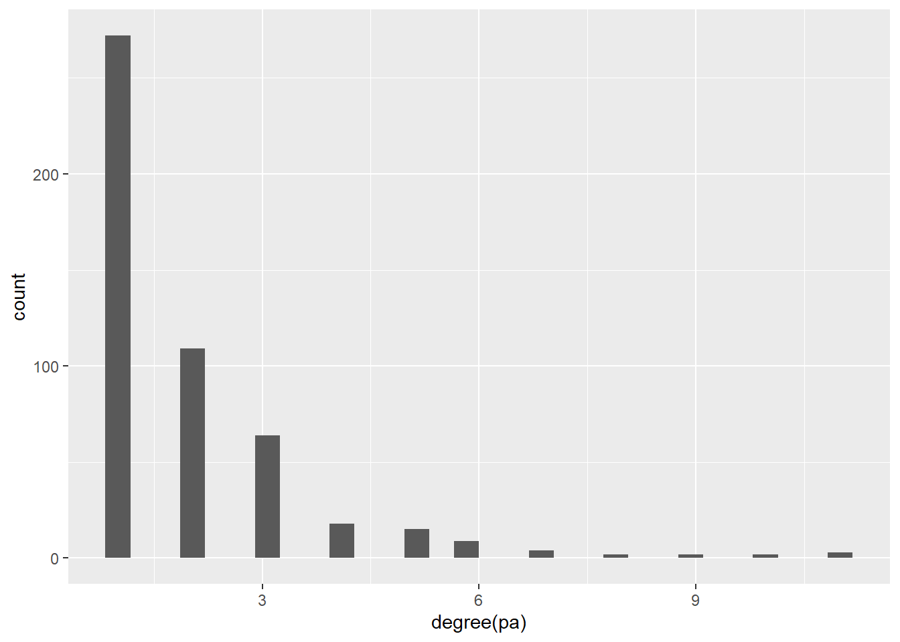
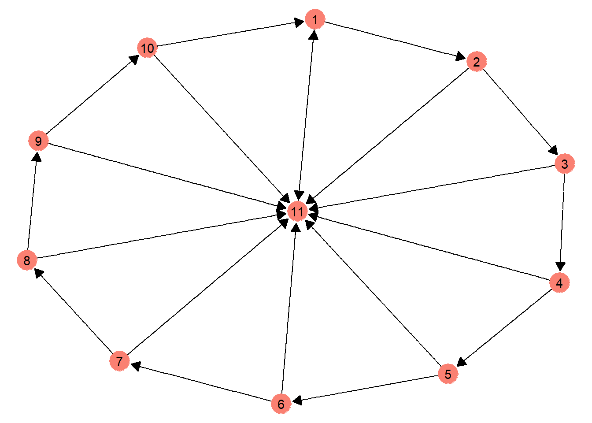
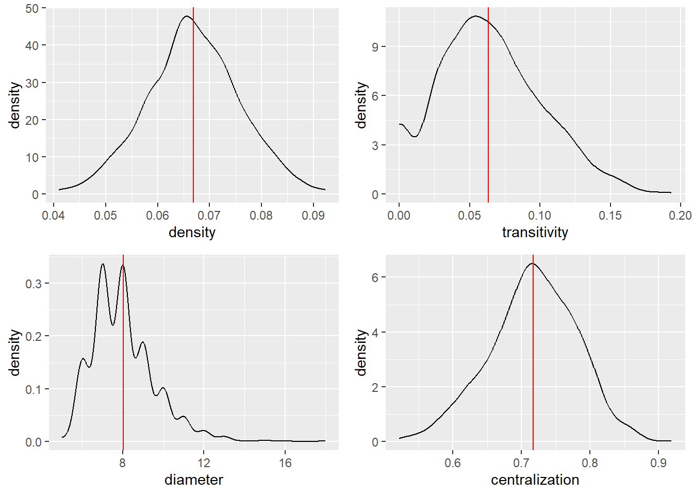
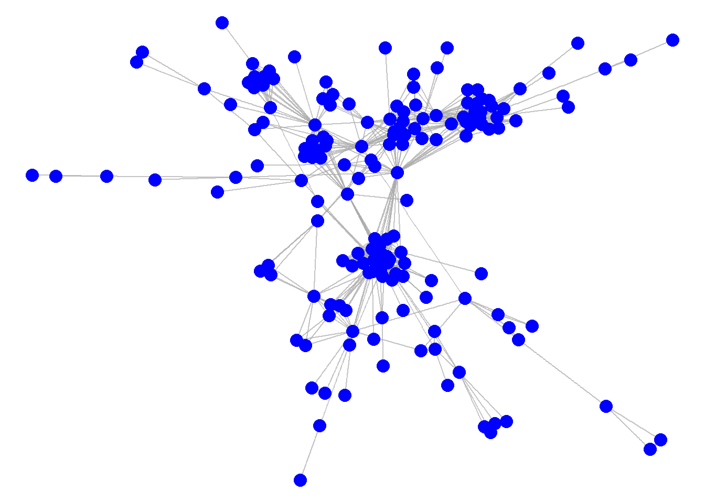
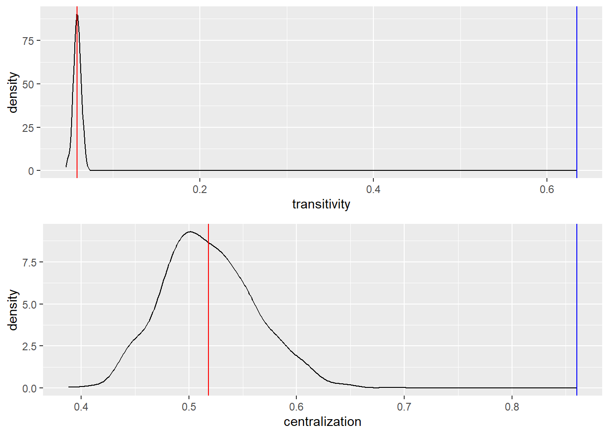

library(intronets)
library(igraph)
library(ggraph)
library(tidyverse)
library(gridExtra)
library(patchwork)10 Network Simulations
Data simulations are a crucial tool for constructing, sharpening, and testing theories. This is especially true for network data. Below I will present some techniques for simulating different types of networks and examining distributions from network simulations.
First, let’s install several R packages.
The igraph package includes numerous functions that can be used to generate different networks. For example…
# Built in graphs
eg <- make_empty_graph(40)
fg <- make_full_graph(40)
st <- make_star(40)
tr <- make_tree(40, children = 3, mode = "undirected")
rn <- make_ring(40)
lt <- make_lattice(c(4,4,4))
par(mar=c(0,0,2,0), mfrow = c(2, 3))
plot(eg, vertex.size=10, vertex.label=NA,
main = "Empty Graph")
plot(fg, vertex.size=10, vertex.label=NA,
main = "Full Graph")
plot(st, vertex.size=10, vertex.label=NA,
main = "Star Graph")
plot(rn, vertex.size=10, vertex.label=NA,
main = "Ring Graph")
plot(tr, vertex.size=10, vertex.label=NA,
main = "Tree Graph")
plot(lt, vertex.size=10, vertex.label=NA,
main = "Lattice Graph")
An empty graph contains only nodes (or vertices), but no lines (or edges) connecting them.
A full graph contains every possible line connecting all nodes with one another.
A star graph contains a central node connected to a series of “pendant” nodes that each have a degree of 1.
A ring graph contains nodes that all have a degree of 2 and that only connect to their nearest “neighbors,” generating a circular graph.
A tree graph contains no transitive triples, which occurs when nodes A, B, and C are all connected together.
A lattice graph contains nodes that exist in a grid structure.
10.1 Random graphs
In addition to the specific types of graphs, the igraph package allows one to generate random graphs. The way to do this is to use the sample_gnp function to generate an Erdős-Rényi random graph.
We can start by setting a random number seed for reproducibility. Then when writing the function, it is necessary to indicate how many nodes to include in the graph, as well as the odds of tie formation between nodes. Below I specify 40 nodes and tie formation odds at 1 tie for every 15 potential ties (or 6.67%).
The code below also runs the procedure twice and plots the network graphs (using ggraph) side-by-side (using patchwork).
set.seed(9035768)
r1 <- sample_gnp(40, 1/15)
r2 <- sample_gnp(40, 1/15)
g1 <- ggraph(r1, layout = "fr") +
geom_edge_link(color = "darkgrey") +
geom_node_point(color = "red", size = 4) +
ggtitle("Random 1") +
theme_void()
g2 <- ggraph(r2, layout = "fr") +
geom_edge_link(color = "darkgrey") +
geom_node_point(color = "red", size = 4) +
ggtitle("Random 2") +
theme_void()
### Compare and contrast
g1 + g2
Even though the syntax for generating these two graphs is identical, the results show two different graphs. That’s because the random graph procedure is stochastic. In other words, the outcome depends on probability. We provide the general parameters for the graph, but the ultimate features of the graph maintain a random component.
We will return to these random graphs later in this tutorial. But before we do, we should discuss two other forms of stochastic network simulations.
10.2 Small Worlds
The principle of Six Degrees of Separation was first established as part of an experiment conducted by Stanley Milgram in the 1960s. He asked research subjects to send mail correspondence to their friends or acquaintances to reach a target person whom they did not know. The study suggested that people, on average, were only six connections away from any other person in the United States. This was a surprising finding indeed. With so many people in the US, why did it only take an average of 6 connections to reach a random person?
Later research efforts by Watts and Strogatz pointed to the reason. The social networks of human beings have a unique set of characteristics. First, we have high local density, which simply means that most of the people whom we know also know each other. We tend to form cliques or clans comprised of people who all are relatively interconnected. Second, human social networks also tend to contain individuals who are connected to other individuals outside of their local “neighborhoods.” These super connectors make the big world of social networks seem a bit smaller. Just a few of these connections across the system means that it does not take too many connections to get from one end of the network to the other.
This theory is formalized and can be tested as part of the Watts-Strogatz game. The tendency toward local connectivity is captured by the “nei” option. Here we’ll set that as a constant equal to 2. P is the probability of connections outside of the local neighborhood (or in network parlance, “rewiring”). By varying the value of P, we can see how the world gets smaller. Specifically, we can focus on the diameter of the graph to see how large or small the world is. Larger diameters mean that the distance from one end of the graph to the other is greater.
set.seed(9035768)
P <- .01 # low rewiring probability
sw01 <- sample_smallworld(dim=1, size=50, nei=2, p=P)
d01 <- diameter(sw01)
P <- .04
sw04 <- sample_smallworld(dim=1, size=50, nei=2, p=P)
d04 <- diameter(sw04)
P <- .09
sw09 <- sample_smallworld(dim=1, size=50, nei=2, p=P)
d09 <- diameter(sw09)
g01 <- ggraph(sw01, layout = "circle") +
geom_edge_link(color = "darkgrey") +
geom_node_point(color = "red", size = 4) +
ggtitle(paste("p = .01, diameter = ", d01)) +
theme_void()
g04 <- ggraph(sw04, layout = "circle") +
geom_edge_link(color = "darkgrey") +
geom_node_point(color = "red", size = 4) +
ggtitle(paste("p = .04, diameter = ", d04)) +
theme_void()
g09 <- ggraph(sw09, layout = "circle") +
geom_edge_link(color = "darkgrey") +
geom_node_point(color = "red", size = 4) +
ggtitle(paste("p = .09, diameter = ", d09)) +
theme_void()
g01 + g04 + g09
As P increases, the diameter shrinks. This shows us that the “super connector” feature of human social networks helps to make the world smaller.
10.3 Preferential attachment
Another very important theory about human social networks is preferential attachment. Consider walking into a room filled with people you have never met before. Who are you most interested in talking with? While some might choose the wallflower over in the corner, most people prefer to meet with the most popular people at the party.
This principle works the same for social media. The Kardashians don’t just have a few more followers than you do on Instagram, they have exponentially more followers than you. (No shame…me, too!) The key insight here is that connections with others follow a “power law” distribution. That is to say, the overwhelming majority of people have a relatively small number of ties, while a small number of people have an immense number of ties. This is all due to preferential attachment. People prefer to attach to others who already have many attachments.
We can illustrate the principle of preferential attachment via the Barabasi game (function = sample_pa). This function works by generating a random network in stages, adding new nodes and ties to the network in each step. When a new node enters the network, it has a choice of whom to connect with. The choice is stochastic, but new nodes express a preference for connecting with existing nodes that have more connections (i.e., higher degree).
The code below runs the model. First, I set the number of nodes at 500. Second, I set a value for power at 0.5, which refers to the overall strength of preferences for attachment to popular nodes. I would describe this as a medium to high level of preferencing. You should try different values to see how this alters the results. Finally, I am asking for a non-directed network.
pa <- sample_pa(500, power = .5, directed = F)Next, let’s visualize the results. I set the size of the nodes based on the degree (number of ties). For the color, I distinguish between high degree nodes (degree > 7) and all other nodes.
V(pa)$deg <- degree(pa)
V(pa)$deg_cat <- ifelse(V(pa)$deg > 7, 2, 1)
ggraph(pa, layout = "fr") +
geom_edge_link(color = "darkgrey") +
geom_node_point(aes(color = deg_cat, size = deg), show.legend = F) +
ggtitle(paste("Preference = 0.5")) +
theme_void() 
Do you see similarities with any of the built-in graphs we generated earlier? How about the tree network? Notice the similar branching structure with few transitive triples.
Also, note how the degree structure of this network corresponds to the power law – many nodes have low degree values and a few nodes have very high degree values. In fact, let’s plot out the degree structure to demonstrate the high level of degree inequality between nodes.
deg <- as.data.frame(degree(pa))
ggplot(deg, aes(x = `degree(pa)`)) +
geom_histogram()
10.4 Random walk
One of the things simulations are useful for is respondent-driven sampling. Let’s say you meet someone at a party and they tell you that they are part of an exclusive group. This is interesting to you, as a social scientist, which leads to you to interview this person. The interview goes well, so you ask your informant to share with you the name and contact information of another group member. The hope is that you can sequentially interview a few members of the group to understand how the group operates, rather than having to interview all of the members.
As you may have guessed, a concern here is that you may not be gathering a representative sample of the group members. Who are you likely to be interviewing and who is likely to be left out? Knowing more about the structure of relationships among the group could help you answer this question.
Let’s generate a combined ring and star network. This group contains a popular leader along with a set of weakly-connected peripheral followers.
g <- make_ring(10, directed = TRUE) %u%
make_star(11, center = 11) + edge(11, 1)
V(g)$name <- as.character(c(1:11))
ggraph(g) +
geom_edge_link(color = "black",
arrow = arrow(length = unit(3, 'mm'),
type = "closed"),
end_cap = circle(3.5, 'mm')) +
geom_node_point(color = "salmon", size = 8) +
geom_node_text(aes(label = name)) +
theme_void() 
Given this structure, we can estimate a “random walk” across the network. We can start with our introduction to a peripheral individual (person 1) in the group. Then we can simulate options for who person 1 will nominate for an additional interview. Based on the graph, there are only two options. Person 1 has arrows leading to person 2 and person 11 only. Consequently, the random_walk algorithm randomly chooses either 2 or 11. Then based on that choice, the new focal actor has to make an additional choice.
We’ll do this below on a small scale, demonstrating a random walk starting at 1 and going 5 additional steps.
(w <- random_walk(g, start = 1, steps = 5))+ 6/11 vertices, named, from 7b98b27:
[1] 1 2 3 4 11 1 The vector shows the random path taken across 5 steps.
Now let’s generate a much longer random walk that includes 10000 steps. We can use the table function to observe the frequency that each node appears on the random walk. Knowing about the structure of the graph, can you guess which nodes are going to have the highest frequency?
w <- random_walk(g, start = 1, steps = 10000)
table(w)w
1 2 3 4 5 6 7 8 9 10 11
3352 1657 800 417 215 107 54 31 15 5 3348 Nodes 1 and 11 receive that lion’s share of attention on the random walk. A close inspection of the graph object reveals why. All nodes have an option of choosing node 11 as a potential next path and once at node 11, the only path option is to travel to node 1.
The random walk tells us about centrality or popularity within the network. One might astutely hypothesize, for example, that a group member who is highly central to the network will appear frequently on a random walk. Below I test this idea using eigenvector centrality.
ec <- eigen_centrality(g, directed = TRUE)$vector
cor(table(w), ec)[1] 0.9622836The correlation table shows a very high association between a node’s eigenvector centrality and their chances of being part of a random walk.
10.5 Network distributions
Let’s return to the random graph models so we can consider how simulated networks can generate distributions. Previously we used the Erdős-Rényi model to generate two different random networks. Now let’s generate 1,000 random networks!
Hold on…why would we want to do that? Well, generating lots of networks creates a set of distributions that can be useful for comparing observed networks to theoretical networks. While that explanation may not make much sense at this point, let’s go ahead and generate these distributions first, then we can consider their usefulness later.
The code below estimates 1000 random networks using the Erdős-Rényi game function and then saves metrics for four network features: 1) density, 2) transitivity, 3) diameter, and 4) centralization (based on eigenvector centrality scores). The interpretation of these metrics means little right now. The main point is that we’re going to get a range of values for these metrics across our large set of networks.
To get into the weeds of the code, gnum is our counter for our looped set of code, which will run 1000 times. gdist is our data frame that starts out empty, but will get filled up as each new graph is estimated. The “for” statement starts the loop, which will run from 1 to 1000. During each iteration, we will estimate a random network and save each of our four metrics. Then we will line the metrics up into a temporary vector (temp) and tack it onto the bottom of the gdist data frame. The resulting data frame will contain 1000 rows and four columns for each of the network metrics.
gnum <- c(1:1000)
gdist <- as.data.frame(NULL)
for (i in gnum) {
g <- sample_gnp(40, 1/15)
density <- edge_density(g)
transitivity <- transitivity(g)
diameter <- diameter(g)
centralization <- centr_eigen(g)$centralization
# bind the data and append to the dataframe
temp <- cbind(density, transitivity, diameter, centralization)
gdist <- rbind(gdist, temp)
}10.6 Graphing network distributions
Using density plots in ggplot2, we can display the distributional features of the networks. First, I created the 4 graphs, then we can plot them side-by-side using the grid.arrange function.
p1 <- ggplot(gdist, aes(x = density)) +
geom_density() +
geom_vline(xintercept = mean(gdist$density), color="red")
p2 <- ggplot(gdist, aes(x = transitivity)) +
geom_density() +
geom_vline(xintercept = mean(gdist$transitivity), color="red")
p3 <- ggplot(gdist, aes(x = diameter)) +
geom_density() +
geom_vline(xintercept = mean(gdist$diameter), color="red")
p4 <- ggplot(gdist, aes(x = centralization)) +
geom_density() +
geom_vline(xintercept = mean(gdist$centralization), color="red")
grid.arrange(p1,p2,p3,p4)
The graphs show the variation in the features of the randomly generated networks. I added vertical lines to indicate the mean values for each distribution.
Now we can return to the question of why these distributions are useful. Imagine your professor conducted a survey in your class to identify the extent to which students consider each other to be friends. Now let’s say you are examining a network graph of the results. Is this a typical set of relationships? Is it atypical? Are some features of the network typical and others atypical?
It’s difficult to know the answers to these questions without some sort of baseline. That’s how random networks can help. By generating random network distributions, we can determine the extent to which an observed network is, say, less centralized than one would expect to find in a random network. Or perhaps transitive triples are more common in an observed network relative to random networks. In these instances, the statistical features of random networks provide a baseline for comparison.
To illustrate, let’s examine a real world network. We gathered data on online interactions on the GitHub platform among people employed by a top software development company in the United States. Each tie represents a shared contribution to GitHub repository. How different are these networks from random networks? Let’s first install and view the GitHub data.
load_nets("github.rda")
ggraph(github, layout = "fr") +
geom_edge_link(color = "darkgrey", alpha = 0.7) +
geom_node_point(color = "blue", size = 4) +
theme_void()
Now let’s estimate a series of 1000 random graphs based on this observed network. To do this, we’ll need to know the number of nodes and the graph density.
nrow(as.matrix(github))[1] 174edge_density(github)[1] 0.05913228With this information, we can simulate the graphs, obtaining estimates for transitivity and centralization. We can set these simulated graphs to contain 174 nodes and to be around 6% (or 1 out of 17) in terms of edge density.
gdist <- as.data.frame(NULL)
for (i in gnum) {
g <- sample_gnp(174, 1/17)
transitivity <- transitivity(g)
centralization <- centr_eigen(g)$centralization
# bind the data and append to the dataframe
temp <- cbind(transitivity, centralization)
gdist <- rbind(gdist, temp)
}Now let’s obtain the actual transitivity and centralization scores from the GitHub network and compare it to the simulated distributions. I’ll set the distribution mean as a red line and the observed mean as a blue line.
gh_trans <- transitivity(github)
gh_cent <- centr_eigen(github)$centralization
p1 <- ggplot(gdist, aes(x = transitivity)) +
geom_density() +
geom_vline(xintercept = mean(gdist$transitivity), color="red") +
geom_vline(xintercept = gh_trans, color="blue")
p2 <- ggplot(gdist, aes(x = centralization)) +
geom_density() +
geom_vline(xintercept = mean(gdist$centralization), color="red") +
geom_vline(xintercept = gh_cent, color="blue")
grid.arrange(p1,p2)
The results show that transitivity and centralization in the GitHub network are both far greater than what one would expect to see in a random network. See how the blue lines are far to the right of the simulated distributions.
10.7 Conditional Uniform Graph (CUG) Tests
While it is clear to see this result visually, in some cases we might want to know if this result is statistically significant. Technically speaking, this would mean that the observed value is plus or minus 2 standard deviations away from the mean of the simulated distribution, which suggests that the values are very unlikely to be observed merely by chance.
For this we can turn to Conditional Uniform Graph (or CUG) tests. CUG tests are great because they allow us to compare network statistics to random graph statistics while also providing information about the extent to which the differences are statistically significant.
These procedures are not included in the igraph package, so we’ll have to convert the GitHub igraph object to a network object and use the sna package.
library(sna)
library(intergraph)
gh_net <- asNetwork(github)Then we can use apply the CUG test to the gh_net object by simulating a series of 1000 random networks. The following code asks to compare the transitivity (“gtrans”) between the gh_net graph and the random graph distribution. The code also notes that this is an undirected “graph”. Finally, we condition the simulations based on density (“edges”), which means that all simulated graphs should have a density similar to the gh_net graph.
cug.test(dat = gh_net, gtrans, mode = c("graph"), cmode = "edges")
Univariate Conditional Uniform Graph Test
Conditioning Method: edges
Graph Type: graph
Diagonal Used: FALSE
Replications: 1000
Observed Value: 0.633946
Pr(X>=Obs): 0
Pr(X<=Obs): 1 The results show the observed value of transitivity at 0.63, which indicates that 63 percent of all possible triads in the network are complete (with ties between all three nodes). Is this a significantly high value? Yes. The Pr(X<=Obs) portion of the output tells us that the probability that the observed transitivity value is greater than the random values from the simulated graphs is 1. A probability of 1 means the outcome is certain to happen.
The next set of code generates a similar test, but instead of transitivity asks for a comparison of centralization. In this case, we need to provide a few more details for the test to indicate a specific form of centralization (i.e., Freeman degree).
cug.test(dat = gh_net, centralization, mode = c("graph"), cmode = "edges",
FUN.arg = list(FUN = degree, cmode = "freeman"))
Univariate Conditional Uniform Graph Test
Conditioning Method: edges
Graph Type: graph
Diagonal Used: FALSE
Replications: 1000
Observed Value: 0.1740825
Pr(X>=Obs): 0
Pr(X<=Obs): 1 Here we can see that the level of degree centralization in the graph is 0.17. Is this large or small? Is the difference statistically significant? As with transitivity, we can see that the Pr(X<=Obs) value is 1, indicating that the level of centralization observed in the GitHub network is significantly greater than what one would expect to observe in a random network of similar density.
As you can see, random network simulation has many important uses. In addition to evaluating different types of network structures and social processes, simulations provide the basis for making statistical inferences. In fact, simulations form the basis for inference in advanced network modeling, such as exponential random graph models (or ERGMs).
10.8 References
For classic research on random networks…
- Erdős, P.; Rényi, A. (1959). “On Random Graphs.” Publicationes Mathematicae. 6 (3–4): 290–297.
For more on the small world phenomenon…
- Milgram, S. 1967. “The Small World Problem.” Psychology Today 2:60–67.
- Watts, D. J., and S. H. Strogatz. 1998. “Collective Dynamics of ‘small-World’ Networks.” Nature 393(6684):440–42.
For more on preferential attachment…
- Barabási, Albert-László, and Réka Albert. 1999. “Emergence of Scaling in Random Networks.” Science 286(5439):509–12.
For more on GitHub interactions…
- Middleton, Justin, Emerson Murphy-Hill, Demetrius Green, Adam Meade, Roger Mayer, David White, and Steve McDonald. 2018. “Which Contributions Predict Whether Developers Are Accepted into Github Teams.” Pp. 403–13 in Proceedings of the 15th International Conference on Mining Software Repositories, MSR ’18. New York, NY, USA: Association for Computing Machinery.